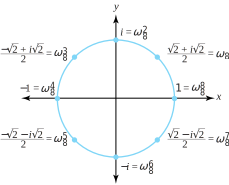
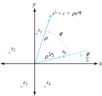
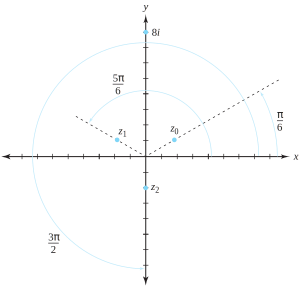

The real numbers are deficient in the sense that not all algebraic operations on them produce real numbers. Thus, for \(\sqrt{-1}\) to make sense, we must consider the domain of complex numbers. Do complex numbers have this same deficiency? That is, if we are to make sense of expressions such as \(\sqrt{1+i}\text{,}\) must we appeal to yet another new number system? The answer to this question is no. In other words, any reasonable algebraic operation performed on complex numbers gives complex numbers. Later we show how to evaluate intriguing expressions such as \(i^{i}\text{.}\) For now we only look at integral powers and roots of complex numbers.
The important players in this regard are the exponential and polar forms of a non-zero complex number \(z=re^{i\theta}=r(\cos\theta+i\sin\theta)\text{.}\) By the laws of exponents (which, you recall, we have promised to prove in Chapter 5) we have
The real part of this expression is \(\cos ^{5}\theta -10\cos^3\theta \sin^2\theta +5\cos \theta \sin^4\theta\text{.}\) Equating this to the real part of \(\cos 5\theta +i\sin 5\theta\) on the right side of Equation (1.5.2) establishes the desired result.
A key aid in determining roots of complex numbers is a corollary to the fundamental theorem of algebra. We prove this theorem in Chapter 6. Our proofs must be independent of the conclusions we derive here because we are going to make use of the corollary now.
Theorem1.5.4.Corollary to the fundamental theorem of algebra.
If\(\boldsymbol{P(z)}\)is a polynomial of degree\(\boldsymbol{n, \, (n>0)}\text{,}\)with complex coefficients, then the equation\(\boldsymbol{P(z) = 0}\)has precisely\(\boldsymbol{n}\)(not necessarily distinct) solutions.
Let \(P(z) = z^3+(2-2i)z^2 + (-1-4i)z-2\text{.}\) This polynomial of degree 3 can be written as \(P(z) =(z-i)^2(z+2)\text{.}\) Hence the equation \(P(z) =0\) has solutions \(z_1=i\text{,}\)\(z_2=i\text{,}\) and \(z_3=-2\text{.}\) Thus, in accordance with Theorem 1.5.4, we have three solutions, with \(z_1\) and \(z_2\) being repeated roots.
Theorem 1.5.4 implies that, if we can find \(n\)distinct solutions to the equation \(z^n=c\) (or \(z^n-c=0)\text{,}\) we will have found all the solutions. We begin our search for these solutions by looking at the simpler equation \(z^n=1\text{.}\) Solving this equation will enable us to handle the more general one quite easily.
To solve \(z^n=1\) we first note that, from Identities (1.4.3) and (1.4.11), we can deduce an important condition that determines when two nonzero complex numbers are equal. If we let \(z_1 = r_1e^{i\theta_1}\) and \(z_2 = r_2e^{i\theta_2}\text{,}\) then
where \(k\) is an integer. That is, two complex numbers are equal iff their moduli agree and an argument of one equals an argument of the other to within an integral multiple of \(2\pi\text{.}\)
We now find all solutions to \(z^n=1\) in two stages, with each stage corresponding to one direction in the iff part of Relation (1.5.3) . First, we show that if we have a solution to \(z^n=1\text{,}\) then the solution must have a certain form. Second, we show that any quantity with that form is indeed a solution.
For the first stage, suppose that \(z=re^{i\theta}\) is a solution to \(z^n=1\text{.}\) Putting the latter equation in exponential form gives \(r^ne^{in\theta}=1\cdot e^{i\cdot 0}\text{,}\) so Relation (1.5.3) implies that \(r^n=1\) and \(n\theta =0+2\pi k\text{.}\) In other words,
\begin{equation}
r=1 \text{ and } \theta = \frac{2\pi k}{n}\text{,}\tag{1.5.4}
\end{equation}
where \(k\) is an integer.
So, if\(z=re^{i\theta}\) is a solution to \(z^n=1\text{,}\) then Relation (1.5.4) must be true. This observation completes the first stage of our solution strategy. For the second stage, we note that if\(r=1\text{,}\) and \(\theta =\frac{2\pi k}{n}\text{,}\) then \(z=re^{i\theta}=e^{i\frac{2\pi k}{n}}\) is indeed a solution to \(z^n=1\) because \(z^n=(e^{i\frac{2\pi k}{n}})^n=e^{i2\pi k}=1\text{.}\) For example, if \(n=7\) and \(k=3\text{,}\) then \(z=e^{i\frac{6\pi}{7}}\) is a solution to \(z^7=1\) because \((e^{i\frac{6\pi}{7}})^7=e^{i6\pi}=1\text{.}\)
Furthermore, it is easy to verify that we get n distinct solutions to \(z^n=1\) (and, therefore, all solutions, by Theorem 1.5.4) by setting \(k=0,\,1,\,2,\ldots ,n-1\text{.}\) The solutions for \(k=n,\,n+1,\ldots\) merely repeat those for \(k=0,\,1,\ldots\text{,}\) because the arguments so generated agree to within an integral multiple of \(2\pi\text{.}\) The \(n\) solutions can be expressed as
When \(k=0\) in Equation (1.5.5), we get \(z_0=e^{i\frac{{2\pi \cdot 0}}{n}}=e^0=1\text{,}\) which is a rather trivial result. The first interesting root of unity occurs when \(k=1\text{,}\) giving \(z_1=e^{i\frac{2\pi}{n}}\text{.}\) This particular value shows up so often that mathematicians have given it a special symbol.
Geometrically, the \(n\)th roots of unity are equally spaced points that lie on the unit circle \(C_1(0) =\{z: |z|=1\}\) and form the vertices of a regular polygon with \(n\) sides, which as we mentioned in Section 1.1 is a fact discovered by Leonard Euler.
Example1.5.7.
The solutions to the equation \(z^8=1\) are given by the eight values \(z_k=e^{i\frac{2\pi k}{8}}=\cos \frac{2\pi k}{8}+i\sin \frac{2\pi k}{8}\text{,}\) for \(k=0,\,1,\,2,\ldots,7\text{.}\) In Cartesian form, these solutions are \(\pm 1, \,\pm i, \, \pm \frac{2+i\sqrt{2}}{2}\text{,}\) and \(\pm \frac{2-i\sqrt{2}}{2}\text{.}\) The primitive 8th root of unity is \(\omega_{8}=e^{i\frac{2\pi}{8}}=e^{i\frac{\pi}{4}}=\cos\frac{\pi}{4}+i\sin \frac{\pi}{4}=\frac{\sqrt{2}}{2}+i \frac{\sqrt{2}}{2}\text{.}\)
From Expressions (1.5.6) it is clear that \(\omega_{8}=z_1\) of Equation (1.5.5), as Figure 1.5.8 illustrates.

Figure1.5.8.The eight eighth roots of unity
The procedure for solving \(z^n=1\) is easy to generalize in solving \(z^n=c\) for any nonzero complex number \(c\text{.}\) If \(c=\rho e^{i\phi} = \rho(\cos \phi +i\sin \phi)\) and \(z=re^{i\theta}\text{,}\) then \(z^n=c\) iff \(r^ne^{in\theta}=\rho e^{i\phi}\text{.}\) But this last equation is satisfied iff
\begin{align*}
r^n \amp = \rho \text{ and }\\
n\theta \amp = \phi +2k\pi \text{ , where } k \text{ is an integer. }
\end{align*}
As before, we get \(n\) distinct solutions given by
Each solution in Equation (1.5.7) can be considered an \(n\)th root of \(c\text{.}\) Geometrically, the \(n\)th roots of \(c\) are equally spaced points that lie on the circle \(C_{\rho^{\frac{1}{n}}}(0) =\{z:|z| =\rho^{\frac{1}{n}}\}\) and form the vertices of a regular polygon with \(n\) sides. Figure 1.5.9 illustrates the case for \(n=5\text{.}\)

Figure1.5.9.The five solutions to the equation \(z^{5}=c\)
It is interesting to note that if \(\zeta\) is any particular solution to the equation \(z^n=c\text{,}\) then all solutions can be generated by multiplying \(\zeta\) by the various nth roots of unity. That is, the solution set is
The reason for this is that, if \(\zeta^n=c\text{,}\) then for any \(j=0,\,1,\,2,\ldots ,n-1\text{,}\)\((\zeta\omega_n^j)^n=\zeta^n(\omega_n^j)^n=\zeta^n(\omega_n^n)^j=\zeta^n(1)=c\text{,}\) and that multiplying a number by \(\omega_n=e^{i\frac{2\pi}{n}}\) increases an argument of that number by \(\frac{2\pi}{n}\text{,}\) so that Expressions (1.5.8) contains n distinct values.
Example1.5.10.
Find all cube roots of \(8i=8(\cos \frac{\pi}{2}+i\sin \frac{\pi}{2})\text{.}\)
The Cartesian forms of the solutions are \(z_0=\sqrt{3}+i\text{,}\)\(z_1=-\sqrt{3} +i\text{,}\) and \(z_2=-2i\text{,}\) as shown in Figure 1.5.11

Figure1.5.11.The point \(z=8i\) and its three cube roots, \(z_0\text{,}\)\(z_1\text{,}\) and \(z_2\)
Is the quadratic formula valid in the complex domain? The answer is yes, provided we are careful with our terms.
Theorem1.5.12.Quadratic formula.
{ } If \(az^2+bz+c=0\text{,}\) then the solution set for \(z\) is \(\Big\{\frac{-b+(b^2-4ac)^{\frac{1}{2}}}{2a}\Big\}\text{,}\) where by \((b^2-4ac)^{\frac{1}{2}}\) we mean all distinct square roots of the number inside the parenthesis.
Proof.
The proof is left as an exercise.
Example1.5.13.
Find all solutions to the equation \(z^2+(1+i)z+5i=0\text{.}\)
As \(-18i=18e^{i(-\frac{{\pi}}{2})}\text{,}\) Equations (1.5.7) give \((-18i)^{\frac{1}{2}}=18^{\frac{1}{2}}e^{{i}\frac{{(-\frac{\pi}{2}+2k\pi )}}{2}}\text{,}\) for \(k=0\) and 1. In Cartesian form, this expression reduces to \(3-3i\) and \(-3+3i\text{.}\) Thus, our solution set is \(\{\frac{-(1+i)+(3-3i)}{2},\,\frac{-(1+i)+(-3+3i)}{2}\}\text{,}\) or \(\{1-2i,\,-2+i\}\text{.}\)
In Exercise 1.2.5 of Section 1.2 we asked you to show that a polynomial with non real coefficients must have some roots that do not occur in complex conjugate pairs. This last example gives an illustration of such a phenomenon.
ExercisesExercises
1.
Calculate the following.
(a)
\((1-i\sqrt{3})^3(\sqrt{3}+i)^2\)
Solution.
\(-16-i16\sqrt{3}\text{.}\)
(b)
\(\frac{(1+i)^3}{(1-i)^5}\)
(c)
\((\sqrt{3}+i)^6\)
Solution.
\(-64\text{.}\)
2.
Show that \((\sqrt{3}+i)^4=-8+i8\sqrt{3}\)
(a)
by squaring twice .
(b)
by using De Moivre’s formula, given in Equation (1.5.2).
3.
Use the method of Example 1.5.3 to establish trigonometric identities for \(\cos3\theta\) and \(\sin3\theta\text{.}\)
Find all the roots of the equation \(z^4-4z^3+6z^2-4z+5=0\) given that \(z_1=i\) is a root.
Solution.
Since the coefficients are real, roots come in conjugates. Thus, \(z-i\text{,}\) and \(z+i\) are factors. Dividing the polynomial by \(z^2+1\) yields a quadratic, which can be solved with the quadratic formula (Theorem 1.5.12) to get \(2-i\) and \(2+i\) for the remaining solutions.
8.
Solve the equation \((z+1)^3=z^3\text{.}\)
9.
Find the three solutions to \(z^{\frac{3}{2}}=4\sqrt{2}+i4\sqrt{2}\text{.}\)
Let \(z=e^{i\theta}\) For the left hand side of part (a), use De Moivre’s formula. Keep \(z=e^{i\theta}\) on the right hand side and multiply numerator and denominator by \(e^{-i\frac{\theta}{2}}\text{.}\) Simplify, and then equate real parts of the left and right hand sides.
12.
If \(1=z_0, \, z_1, \ldots,
z_{n-1}\) are the nth roots of unity, prove that
Use Exercise Task a and recall that if \(z_k\) is an \(n^{th}\) root of unity, then \(z_k^n=1\text{.}\)
14.
Equation (1.5.2), De Moivre’s formula, can be established without recourse to properties of the exponential function. Note that this identity is trivially true for \(n=1\text{.}\)
(a)
Use basic trigonometric identities to show the identity is valid for \(n=2\text{.}\)
(b)
Use induction to verify the identity for all positive integers.
(c)
How would you verify this identity for all negative integers?
15.
Find all four roots of \(z^4+4=0\text{,}\) and use them to demonstrate that \(z^4+4\) can be factored into two quadratics with real coefficients.
Solution.
The four roots are \(\pm 1\pm i\) (show the details). Use the roots as linear factors in conjugate pairs to get \(z^4+1=(z^2+2z+2)(z^2-2z+2)\text{.}\)